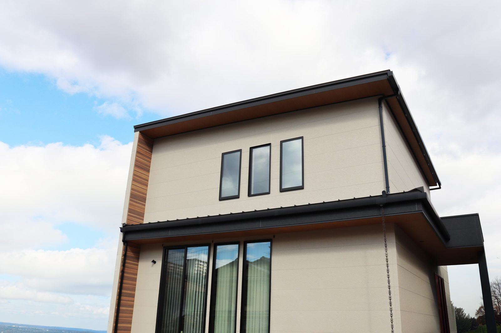
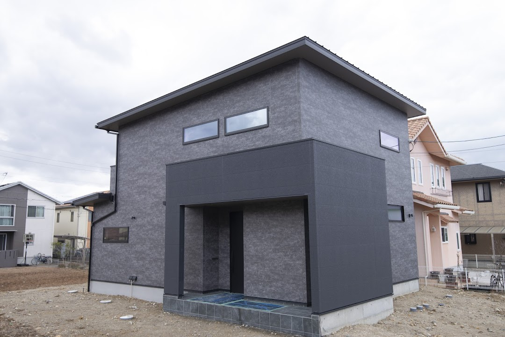

8月から9月は台風の季節です。点検でお客様のお家を回っていると、台風の被害には、はっきりした特徴があります。壊れるところは、だいたい決まっている。そして、その多くは来る前のひと手間で防げる——ということです。今日は、台風の予報が出たら前日までにやってほしいことを、現場目線でまとめます。
前日までにやること（外まわり）

やらないでほしいこと。屋根には登らないでください。瓦やアンテナが気になっても、素人が屋根に登るのは、台風そのものより危険です。地上から双眼鏡やスマホのズームで見るだけにして、気になるところがあれば写真を撮って、建てた会社に送ってください。
当日の過ごし方
当日は、もう外に出ないことが最大の対策です。そのうえで、家の中でできることが少しあります。
窓の鍵をかけてください。サッシは鍵をかけると枠に引き寄せられて、すき間風や雨の吹き込みが減ります。シャッターのない窓は、カーテンを閉めておくだけでも、万一ガラスが割れたときの破片よけになります。停電に備えて、スマホの充電とモバイルバッテリー、懐中電灯の場所の確認も。断水が心配な地域なら、お風呂に水を張っておくと、トイレを流す水に使えます。
強い風の最中に「ゴトッ」と音がしても、様子を見に外へ出ないでください。確認は、風がおさまってからで間に合います。
台風のあとに、気をつけてほしいこと
実は、点検の窓口をしていて心配になるのは、台風の最中より台風のあとです。
台風が通ったあとの住宅地には、「近くで工事をしていて、お宅の屋根が浮いているのが見えた」という訪問営業が増えます。不安になって屋根に登らせると、問題のない屋根でも「今すぐ直さないと雨漏りします」と高額な工事の話になる——この手口は全国で繰り返し報告されています。中には、わざと瓦をずらす悪質な例まであります。
その場で契約しない。屋根に登らせない。これだけ守ってください。本当に傷んでいるかどうかは、建てた工務店に見てもらえば分かります。当社で建てていただいたお客様は、定期点検で屋根まわりも見ていますし、台風のあとで心配なところがあれば、点検を待たずに連絡してください。
もうひとつ。台風で屋根や雨樋が傷んだ場合、火災保険の風災補償で直せることがあります。これはご自身の保険証券の確認が先です。「保険を使えば無料で直せる」を売り文句に契約を急がせる業者には、申請の代行手数料や解約トラブルの報告が多いので、落ち着いて、保険会社と建てた会社に相談してください。
ふだんの点検が、台風対策になります
ここまで「前日までにやること」を書きましたが、本当のことを言うと、台風対策のほとんどは、ふだんの点検でできています。雨樋の詰まり、屋根や板金の浮き、シーリングの傷み。こうした「弱いところ」を平時に直してあるかどうかで、同じ台風でも被害はまったく変わります。

当社が定期点検（3ヶ月・6ヶ月・1年・2年・5年・10年〜）を続けているのは、こういう「いざという日」のためでもあります。家は建てて終わりではなく、守りながら住むもの。その伴走が工務店の仕事だと思っています。
よくあるご質問
窓に養生テープを貼ると、割れにくくなりますか？
割れにくくはなりません。テープはガラスを強くするのではなく、割れたときに破片が飛び散りにくくするためのものです。効果の順番でいえば、シャッターを閉める → 飛びそうな物を片づける → カーテンを閉める、が先。テープはその次の「保険」くらいに考えてください。
カーポートの屋根は大丈夫でしょうか？
カーポートの屋根パネルは、じつは台風のときに外れやすいものがあります。強風で骨組みごと壊れないように、パネルが先に外れる設計になっている製品があるためです。外れたパネルが飛ぶと危ないので、古いものや波板は、予報が出たら状態を確認してください。心配なら事前に相談を。
新築の打ち合わせ中です。台風に強い家にできますか？
できます。というより、今の家は建築基準法で耐風の基準が決まっていて、まともに造れば台風で家そのものが壊れることはまずありません。差が出るのは、シャッターの有無、軒や雨樋の計画、バルコニーの水はけ、外に置く物の場所といった「まわりの設計」です。土地の風の通り方も含めて、お打ち合わせのときにご相談ください。

奈良の工務店シバ・サンホームで、初めての家づくりに伴走しています。アフター窓口を長く務めたので、台風前はいつもそわそわします。モットーはスピード・誠実さ・楽しさ。